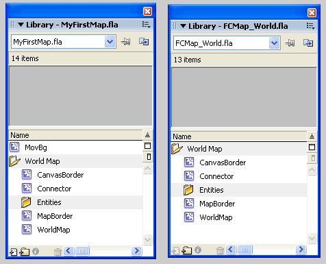
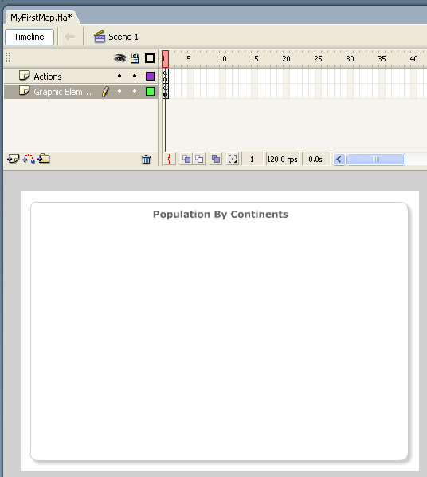
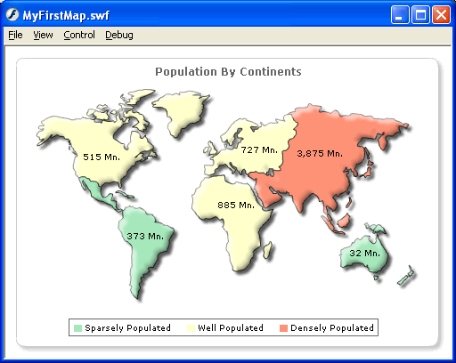

FusionMaps and Flash > Overview |
||||||||||||||||||||||||
FusionMaps maps can very easily be integrated with your Flash movies and applications. To load a map in your movie, all you need to do is include the respective map's class at design-time, copy the library items and then compile it with your application to form a single comprehensive unit. To load FusionMaps maps in your Flash movies, you need to make sure that your Flash movies are also in Flash 8 format and uses ActionScript 2. This is because FusionMaps is coded in ActionScript 2/Flash 8 and intensively makes use of features provided in Flash 8. If you're developing in Flash 9 (or above), you'll need to load FusionMaps maps as external SWF files - you cannot directly load the class of the map.
|
||||||||||||||||||||||||
| XML Data Usage | ||||||||||||||||||||||||
FusionMaps always needs its data in XML format. It CANNOT accept any other format of data including variables, arrays, recordsets etc. Even when using FusionMaps inside your Flash movies, you need to provide it XML data only. XML data can be easily created in your Flash movies either using string concatenation or using methods of the XML Object. You do not need to store data in physical XML files. You can build the XML data in Flash variables at run-time and then pass this to map. So, even if you've your data in arrays, recordsets or remote database (that you access using your own Flash code), you can easily convert them to XML at run-time and then use FusionMaps with it. We won't be discussing XML data structure here, as that has already been discussed in "FusionMaps and XML" Section. Here, we'll directly jump to see how to create a FusionMaps map in your Flash application. We'll start with a very basic single map application. |
||||||||||||||||||||||||
| Basic Example | ||||||||||||||||||||||||
For this example, we create a new .fla named as MyFirstMap.fla. We set the size of this movie to 500x350 pixels and set background as white. The code examples discussed in this section are present in Download Package > Code > FlashExamples. Now, before we code to create the maps, we need to set (install) the maps for use in this movie. Setting up the maps for use in your movie is very simple. You just need to copy com folder from Download Package > MapsSource folder into the folder in which you'll be placing your .fla file. Here, we're placing our .fla file in FlashExamples folder, and as such we copy the com folder here. com folder is the package for FusionMaps Class files. It contains all the files required to generate any map in FusionMaps. Next, we see how to copy the map's visual elements from original library into our movie. |
||||||||||||||||||||||||
| Copying the Map Library Elements | ||||||||||||||||||||||||
We now need to copy the World Map library items from original .fla file to our .fla (MyFirstMap.fla) file. These elements are necessary for the map to render. For each map in FusionMaps pack, if you open the respective .fla file, you'll find a folder in the library that contains the map visual elements. The folder is named as "<<Map Name>> Map" e.g., "World Map" or "USA Map". If you've the Enterprise license of FusionMaps, the .fla files are present in Download Package > MapSource. These .fla files are complete .fla files that can be recompiled to form the original map too. If you've any other license (not including evaluation), you'll have to download the map library by logging into your account at www.fusioncharts.com/PUC > Add-ons. We've removed the library file from core download owing to its size. The map library consists of .fla files that just contains the library items for all the maps. These .fla cannot be compiled to create the full map. It's just to be used as library. To copy the Library items, open libraries of the original .fla and of our .fla. Now, drag & drop the "World Map" folder from original .fla to our .fla. The libraries should now look as under. In the image below, we've dragged and dropped the library item from .fla of World Map present in Enterprise license. If you've any other license, download the library files and open the library .fla to drag and drop the library items instead of World Map .fla. |
||||||||||||||||||||||||
|  | ||||||||||||||||||||||||
| This completes the setup for our movie. Let's now get back to our application. | ||||||||||||||||||||||||
| Back to our movie... | ||||||||||||||||||||||||
| Now that the map is set for use, let's get back to our Flash file. Rename the default layer as "Graphic Elements" and place an oval shape with shadow effect. Basically, we'll use this as the background of the map. The idea is to show how easily FusionMaps can integrate with the graphical elements of your Flash movie. It should look something as under: | ||||||||||||||||||||||||
|  | ||||||||||||||||||||||||
| Binding ActionScript | ||||||||||||||||||||||||
| Create another layer and name it as "Actions". In its first keyframe, punch in the following ActionScript code: | ||||||||||||||||||||||||
/** //Note: If you're loading multiple maps in your Flash movie, you //To create the map, you now need to import the Class of the // ------------- XML Data for the map -------------- // //Here, we're hard-coding an XML data document for demo. // -------------- Actual Code to create the map ------------// |
||||||||||||||||||||||||
Let's get to the above code step by step. To include any FusionMaps map in your Flash movie, you first need to include two files in your movie: com/fusionmaps/includes/LoadingFunctions.as and com/fusionmaps/includes/AppMessages.as. These files contain necessary pre-load functions and application messages for the map. In your application, you can put this code in the main timeline, so that it gets executed only once. After this, we include the Map Class file of the map which we intend to plot. All Map Classes are present in com > fusionmaps > maps folder. So, the package name of each map class is com.fusionmaps. Here, we're building a World Map, and as such the fully qualified class name is com.fusionmaps.WorldMap. Once the classes are imported, we set our focus to building the XML data for the map. We build the XML using string concatenation in the variable strXML. Here, we're hard-coding the XML data in this string variable. In your real world application, this data could come from a database, web service, recordset etc. All you would need to do is get the appropriate data and then encode it into XML using string concatenation or XML Object (though string concatenation is far easier to use and understand). Finally, we create an XML Object from this xml string, as FusionMaps accepts only XML Objects. Moving on , let's see how to build the map now. Each FusionMaps map needs an empty movie clip to build itself in. So, we create an empty movie clip named as MapHolder. We store the reference to this movie clip in mapContainerMC variable. For demonstration purposes, we've created this empty movie clip in _level0 at depth 1. In your applications, you can create it nested within any movie clip. var mapContainerMC:MovieClip = this.createEmptyMovieClip("MapHolder",1) After that, we come to the main line of code - the line that instantiates the map object. var myFirstMap:WorldMap = new WorldMap(mapContainerMC, 1, 450, 315, 20, 20, false, "EN", "noScale", false, ""); Here, we're creating an instance of WorldMap class in our local variable myFirstMap. myFirstMap now stores the reference of the World Map that we intend to display in this movie. To the constructor function of the map class, we pass the following parameters (in sequential order): |
||||||||||||||||||||||||
|
||||||||||||||||||||||||
Note that the above parameters are same for all FusionMaps map. This completes the initialization of your map. You now need to convey the XML data to map. To do so, you use the setXMLData() method of Map Class as under: myFirstMap.setXMLData(xmlData); Here, xmlData refers to our XML Object which we had earlier created. Finally, you render the map by calling render() method of the map object: myFirstMap.render(); When you now view this application, you'll get the following results. |
||||||||||||||||||||||||
|  | ||||||||||||||||||||||||
Easy - isn't it? Well, this was just a beginning. You'll soon see how easy it is to embed powerful mapping capabilities in your Flash applications now. We next see how to load multiple maps in the same application. |